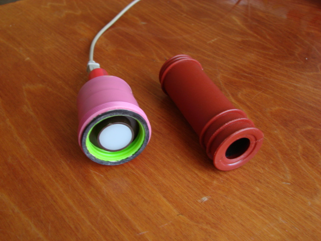
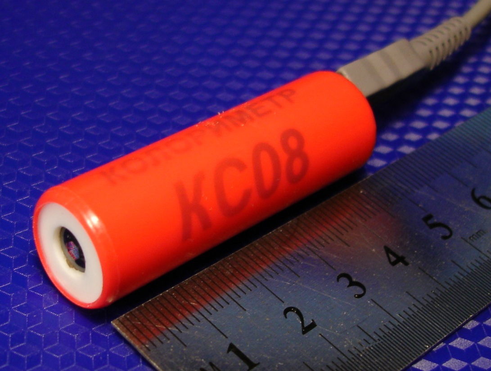

Graphical luxmeter
LG09 USB. 
LG09 is designed
for measuring brightness, illumination, and thermal radiation (radiometer
mode).
LG09
is controlled
and powered via USB by a personal computer or laptop (in the future
- by a pocket computer or smartphone).
Like most luxmeters, LG09 is capable of measuring
the parameters of continuous and periodic light
signals.
Along with using various light-sensitive
heads and nozzles, recording signals and
displaying them in graphical
form, LG09
allows
measuring temperature.

Colorimeter KS08 determines
color and chromaticity coordinates of non-self-luminous and
self-luminous objects;
connects to a computer's USB and works with a computer application,
The application allows
users to expand the library of standards, samples,
loci, and frosted glasses.